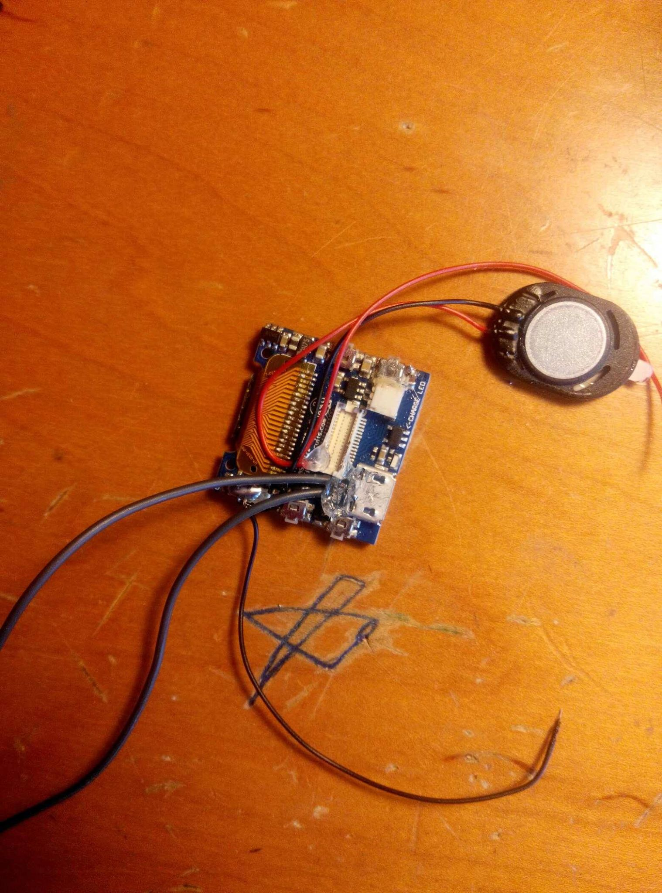
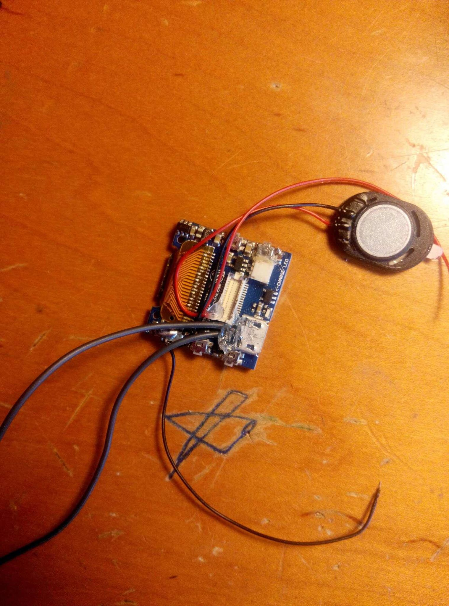

Self Made Arduino Watch
2020-03-09
It’s been a while since I touched this blog. Let’s put some new things!
This watch is built using Tinyscreen+. It has a screen, some buttons, and a processor. Additionally, I soldered a mini speaker and an external micro USB port so it can make sounds, and I can program it. I designed the case in Autodesk Inventor and was 3D printed. The band I got from another old watch, which has a pretty nice mechanics that allows it to be attached onto the case without using any screws.
For the software functionalities, there’s time display, date dieplay, school time table, stop watch, date in Chinese lunar calendar (therefore one can tell the phase of moon from it), old Chinese time.
 
